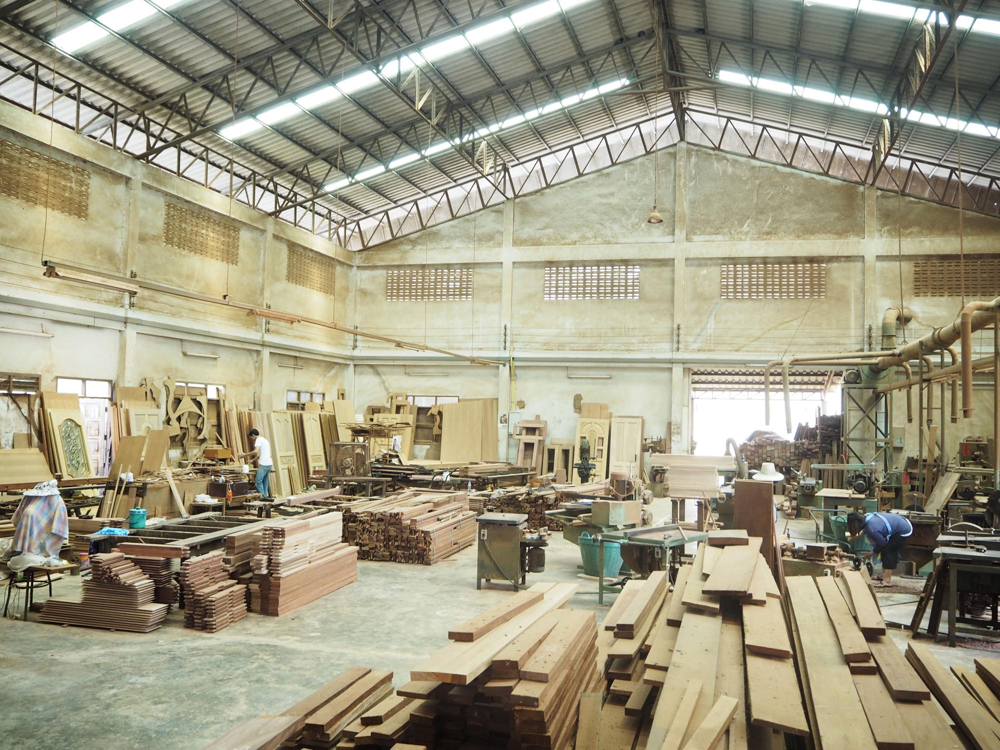

กิจการดำรงต่อมาจนถึงรุ่นลูก เมื่อเกิดการขยายกระบวน การผลิต ได้มีการสร้างโรงงานขึ้นที่บางบัวทองเพื่อรองรับการผลิตที่มากขึ้น รวมทั้งการจัดซื้อเครื่องจักรและสืบทอดฝีมืองานช่างด้วยคนงานฝีมือดีจำนวนมากเพื่อสืบทอดกระการสร้างสรรค์์ผลงานของแซมฟ้าต่อไป
กิจการแซมฟ้าการช่างได้ยืนหยัดมาตลอดระยะเวลา ๕๖ ปี โดยมีการพัฒนาและยึดมั่นในมาตรฐานคุณภาพสินค้าจนได้รับความเชื่อมั่นและไว้วางใจจากลูกค้าด้วยคุณภาพและราคาที่สมเหตุสมผลเสมอมา สิ่่งเหล่านี้คือปัจจัยที่ส่งเสริมให้บริษัทแซมฟ้าการช่างยืนหยัดมาได้ถึงทุกวันนี้ และยังคงผลิตผลงานที่มีคุณภาพให้แก่ลูกค้าทุกท่านจนถึงทุกวันนี้